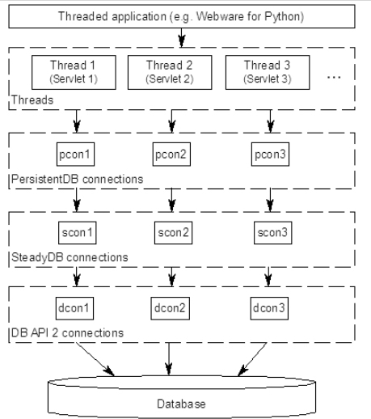
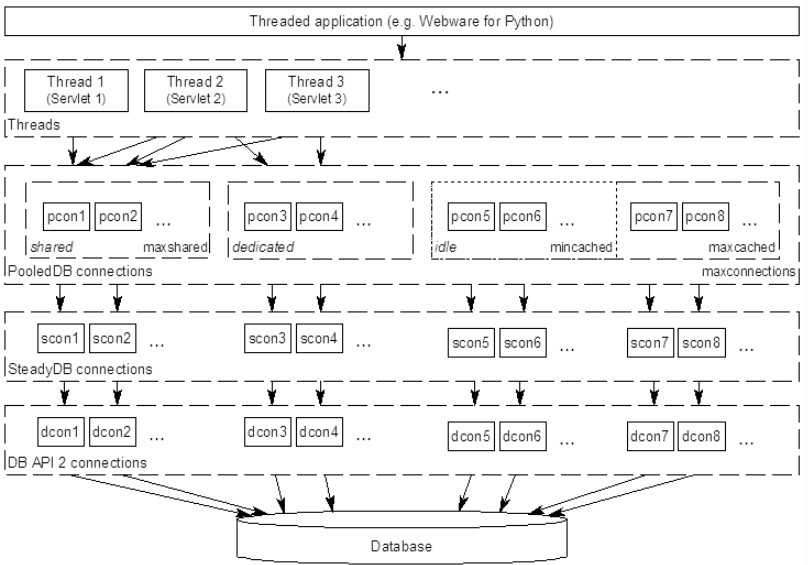
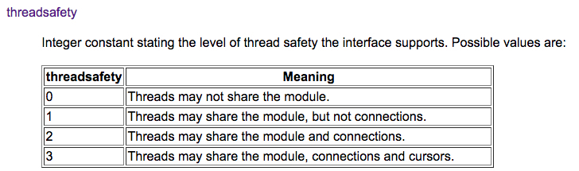

python数据库连接池DBUtils
1. 概述
当我们的程序需要复用数据库连接时，使用连接池替代短连接可以提高数据库的访问效率，避免频繁地创建和销毁数据库连接。python的第三方库DBUtils提供了高效、线程安全的连接池。
DBUtils提供三种类型的数据库连接，分别是：
- SteadyDB
- PersistentDB
- PooledDB
1.1. SteadyDB
SteadyDB提供了一种“强硬”的数据库连接，当数据库连接丢失或断开时，它会强制重连。它是DBUtils实现的一种最基本的数据库连接，底层采用DB-API 2规范的数据库模型。通常我们不直接使用SteadyDB，而是使用以下两种封装了SteadyDB的连接类型：PersistentDB和PooledDB。
1.2. PersistentDB
PersistentDB实现了一种线程安全的数据库连接池

- 当一个线程a启用数据库连接时，PersistentDB会打开一个专供该线程使用的数据库连接
- 当线程a关闭数据库连接时，该数据库连接会继续保持open状态，下次线程a调用时可以直接使用
- 直到线程a消亡时，该数据库连接会自动关闭
PersistentDB可以在同一个线程中通过连接复用来提高数据库访问效率；但是同一个数据库连接不能在不同线程间复用，最大限度地保证数据库连接的线程安全。
1.3. PooledDB
PooledDB同样提供了线程安全的数据库连接池，和PersistentDB的区别是：同一个连接可以在不同线程间复用。

- PooledDB提供了
mincached和maxcached选项；分别用于指定连接池的初始化连接数，以及连接池里允许的最大空闲连接数 PooledDB提供了
maxshared选项，用于设定共享连接池大小。当打开一个数据库连接时，只有在配置了maxshared > 0才会创建PooledSharedDBConnection，从_shared_cache中取出连接供不同线程共用；默认该参数为0，创建的是PooledDedicatedDBConnection，从当前空闲的连接池中取一个连接供当前线程专用，使用完毕后放回空闲连接池中maxshared参数只有在creator.threadsafety > 1时才生效由于pymysql和MySQLdb模块的threadsafety都为1，因此当使用这些模块作为creator时，
maxshared不生效，使用的都是PooledDedicatedDBConnection
实际上还有一种SimplePooledDB，实现了基本的连接池功能；但是它比起PooledDB少了故障重连功能，因此官方文档上不建议将其直接用于生产环境
2. 使用
示例代码：
# coding: utf-8
import pymysql
from DBUtils.PooledDB import PooledDB
import threading
import time
dbopt = {
'user': 'root',
'passwd': 'test',
'host': '127.0.0.1',
'port': 3306,
'connect_timeout': 5,
'write_timeout': 5,
'read_timeout': 5,
'db': 'DM0'
}
db_pool = PooledDB(
creator=pymysql, # 使用数据库连接的模块
maxconnections=10, # 连接池允许的最大连接数，0和None表示不限制连接数
mincached=2, # 初始化时，连接池中至少创建的空闲的链接，0表示不创建
maxcached=5, # 连接池中最多闲置的链接，0和None不限制
maxshared=0, # 连接池中最多共享的链接数量，0表示不共享。PS: 无用，因为pymysql和MySQLdb等模块的 threadsafety都为1，此值只有在creator.threadsafety > 1时设置才有效，否则创建的都是dedicated connection，即此连接是线程专用的。
blocking=True, # 连接池中如果没有可用连接后，是否阻塞等待。True，等待；False，不等待然后报错
maxusage=None, # 一个连接最多被重复使用的次数，None表示无限制
setsession=["set autocommit=1"], # 开始会话前执行的命令列表。如：["set datestyle to ...", "set time zone ..."]；务必要设置autocommit，否则可能导致该session的sql未提交
ping=1, # 每次从pool中取连接时ping一次检查可用性
reset=False, # 每次将连接放回pool时，将未提交的内容回滚；False时只对事务操作进行回滚
**dbopt
)
class DBThread (threading.Thread):
def __init__(self, threadID):
threading.Thread.__init__(self)
self.threadID = threadID
def run(self):
conn = db_pool.connection()
cur = conn.cursor(pymysql.cursors.DictCursor)
cur.execute("INSERT INTO TestTb(name) VALUES(%s)", ["t-{0}".format(self.threadID), ])
print "thread-{0}".format(self.threadID)
if __name__ == "__main__":
time.sleep(10)
for i in xrange(100):
t = DBThread(i)
t.start()
time.sleep(10)
- DBUtils的使用方式很简单，通过
PooledDB()创建连接池；然后通过connection()方法取出连接进行操作即可 - 这里我们创建了100个线程进行并发插入操作，设定最大数据库连接数maxconnections为10
DBUtils建立的是惰性连接，也就是只有调用
connection()取出连接时才会和数据库建立实际的连接，一开始创建PooledDB时是不建立实际连接的；不过可以通过mincached参数设定连接池初始化的连接数，这里我们设定mincached=2。可以看到，在线程并发操作前，就已经建立了两个数据库连接+------+------+-----------------+-----+---------+------+----------+-----------------------+ | Id | User | Host | db | Command | Time | State | Info | +------+------+-----------------+-----+---------+------+----------+-----------------------+ | 4423 | root | localhost:58091 | dm0 | Sleep | 4 | | <null> | | 4424 | root | localhost:58092 | dm0 | Sleep | 4 | | <null> | +------+------+-----------------+-----+---------+------+----------+-----------------------+线程并发数据库操作完成后，PooledDB会保持和数据库的连接；这里我们设定了连接池最大连接数
maxconnections=10，当数据库操作完成后，仍然会有10个连接keepalive可以通过maxcached参数设定最大闲置连接数，这里我们设定
maxcached=5，数据库操作完成后，只有5个闲置连接保留+------+------+-----------------+-----+---------+------+----------+-----------------------+ | Id | User | Host | db | Command | Time | State | Info | +------+------+-----------------+-----+---------+------+----------+-----------------------+ | 4425 | root | localhost:58093 | dm0 | Sleep | 5 | | <null> | | 4427 | root | localhost:58095 | dm0 | Sleep | 5 | | <null> | | 4428 | root | localhost:58096 | dm0 | Sleep | 5 | | <null> | | 4430 | root | localhost:58098 | dm0 | Sleep | 5 | | <null> | | 4434 | root | localhost:58102 | dm0 | Sleep | 5 | | <null> | +------+------+-----------------+-----+---------+------+----------+-----------------------+查看数据库表，正常入库了100条数据
mysql root@localhost:DM0> select count(distinct name) from TestTb; +----------------------+ | count(distinct name) | +----------------------+ | 100 | +----------------------+需要注意的是，创建连接池时必须设定
setsession=["set autocommit=1"]，保证连接池内每个会话的sql能够及时提交；当数据库连接断线重连时，新建的连接也会执行这个setsession操作
参考链接：